Terung (Solanum melongena, di Jawa lebih dikenal sebagai terong) adalah tumbuhan penghasil buah yang dijadikan sayur-sayuran. Asalnya adalah India dan Sri Lanka.
Terung (Solanum melongena, di Jawa lebih dikenal sebagai terong) adalah tumbuhan penghasil buah yang dijadikan sayur-sayuran. Asalnya adalah India dan Sri Lanka.Macam Sayuran dan Manfaatnya
Sayuran merupakan sebutan umum bagi bahan pangan asal tumbuhan yang biasanya mengandung kadar air tinggi dan dikonsumsi dalam keadaan segar atau setelah diolah secara minimal. Sebutan untuk beraneka jenis sayuran disebut sebagai sayur-sayuran atau sayur-mayur. Sejumlah sayuran dapat dikonsumsi mentah tanpa dimasak terlebih dahulu, sementara yang lainnya harus diolah terlebih dahulu dengan cara direbus, dikukus, digoreng, atau disangrai. Sayuran berbentuk daun yang dimakan mentah disebut sebagai lalapan
1. Bayam
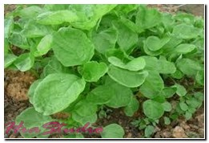
Di Indonesia, bayam dapat tumbuh sepanjang tahun dan ditemukan pada ketinggian 5-2.000 m dpl, tumbuh di daerah panas dan dingin, tetapi tumbuh lebih subur di dataran rendah pada lahan terbuka yang udaranya agak panas.
Bayam termasuk makanan yang kaya nutrisi dan sangat baik sebagai sumber kloropil atau zat hijau, selain itu bayam juga mengandung Vitamin A, B kompleks, C, E, K dan karbohidrat, Beta karoten, Kalsium, Fosfor, dan serta yang tinggi.
Manfaat bayam sangat penting bagi pertumbuhan anak-anak pada umumnya, ibu hamil, dan bagi semua orang tentunya. Bayam nerupakan sayuran yang pertama kali dimakan anak-anak.
2. Cabai
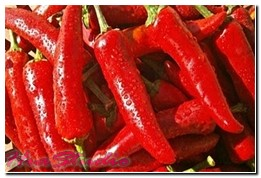Cabai atau biasa disebut dengan cabe yang pedas sangat populer di Asia Tenggara sebagai penguat rasa makanan. Masyarakat Indonesia sangat menyukai masakan pedas. Naik turunya harga cabe sangat mempengarui perekonomian masyarak Indonesia. Pengolahan cabe selain dibuat bumbu bisa dibuat sambal atau dilalap langsung.
3. Sawi
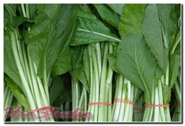Sawi adalah sekelompok tumbuhan dari marga Brassica yang dimanfaatkan daun atau bunganya sebagai bahan pangan (sayuran), baik segar maupun diolah. Penyebutan sawi biasanya mengacu pada sawi hijau (Brassica rapa kelompok parachinensis, yang disebut juga sawi bakso, caisim, atau caisin).
Terdapat pula sawi putih (Brassica rapa kelompok pekinensis, disebut juga petsai) yang biasa dibuat sup atau diolah menjadi asinan. Jenis lain yang kadang-kadang disebut sebagai sawi hijau adalah sesawi sayur (untuk membedakannya dengan caisim). Kailan (Brassica oleracea kelompok alboglabra) adalah sejenis sayuran daun lain yang agak berbeda, karena daunnya lebih tebal dan lebih cocok menjadi bahan campuran mi goreng. Sawi sendok (pakcoy atau bok choy) merupakan jenis sayuran daun kerabat sawi yang mulai dikenal pula dalam dunia boga Indonesia.
4. Terong
Terung (Solanum melongena, di Jawa lebih dikenal sebagai terong) adalah tumbuhan penghasil buah yang dijadikan sayur-sayuran. Asalnya adalah India dan Sri Lanka.
Terung sering ditanam secara tahunan. Tanaman ini tumbuh hingga 40-150 cm (16-57 inci) tingginya. Daunnya besar, dengan lobus yang kasar. Ukurannya 10-20 cm (4-8 inci) panjangnya dan 5-10 cm (2-4 inci) lebarnya. Jenis-jenis setengah liar lebih besar dan tumbuh hingga setinggi 225 cm (7 kaki), dengan daun yang melebihi 30 cm (12 inci) dan 15 cm (6 inci) panjangnya.
Batangnya biasanya berduri. Warna bunganya antara putih hingga ungu, dengan mahkota yang memiliki lima lobus. Benang sarinya berwarna kuning. Buah tepung berisi, dengan diameter yang kurang dari 3 cm untuk yang liar, dan lebih besar lagi untuk jenis yang ditanam.
Terong dalam pengolahannya dapat dikombinasikan dengan bahan makanan yang lain. Banyak jenis terong yang banyak dijual dipasaran. Harganya pun tidak terlalu mahal dibandingkan dengan bahan makanan alami lain. Terong beragam jenisnya, seperti terong ungu, terong belanda, terong bulat dan berbagai jenis lain.
5. Tomat
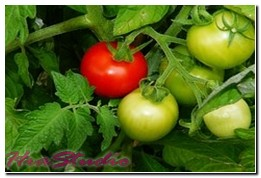Tanaman tomat (Lycopersicon esculentum ) merupakan tanaman perdu semusim, berbatang lemah, dan basah. Daunnya berbentuk segitiga. Buahnya hijau waktu muda dan kuning atau merah waktu tua. Perbanyakan tanaman ini umumnya dengan biji dan biasa dibudidayakan pada lahan kering. Umur panen tanaman tomat kurang lebih 55-61 hari setelah tanam (HST).
Tomat termasuk sayuran buah yang digemari. Tomat mempunyai berbagai manfaat antara lain sebagai bumbu, lalap, makanan yang diawetkan (saus tomat), buah segar atau minuman (juice). Buah tomat banyak mengandung vitamin A dan C.
6. Kembang Kol
 Kembang kol merupakan tumbuhan yang termasuk dalam kelompok botrytis dari jenis Brassica oleracea (suku Brassicaceae). Sebagai sayuran, tumbuhan ini lazim dikenal sebagai kembang kol yang merupakan terjemahan harafiah dari bahasa Belanda bloemkool.
Kembang kol merupakan tumbuhan yang termasuk dalam kelompok botrytis dari jenis Brassica oleracea (suku Brassicaceae). Sebagai sayuran, tumbuhan ini lazim dikenal sebagai kembang kol yang merupakan terjemahan harafiah dari bahasa Belanda bloemkool.
Kubis bunga berbentuk mirip dengan brokoli. Perbedannya, kubis bunga memiliki kepala bunga yang banyak dan teratur dengan padat. Hanya "kepala" kembang kol yang lazim dimakan (dalam literatur berbahasa Inggris disebut white curd). Pada dasar kepala tersebut terdapat daun-daun hijau yang tebal dan tersusun rapat. Kubis bunga juga mirip dengan kubis romanesco.
Kembang kol merupakan sumber vitamin dan mineral dan lazimnya dimakan dengan dimasak terlebih dahulu, meskipun dapat pula dimakan mentah maupun dijadikan acar.
7. Kangkung
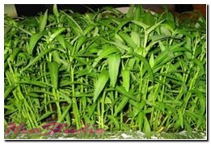Tanaman kangkung (Ipomoea reptans) termasuk sayuran daun yang populer. Hampir setiap penjual sayuran menjual kangkung. Tanaman ini dapat tumbuh dengan baik di daerah dataran rendah.
Terdapat dua jenis kangkung yang biasa dibudidayakan yaitu kangkung darat dan kangkung air. Kangkung air memiliki daun dan batang yang lebih besar dibandingkan dengan kangkung darat. Kangkung dapat dipanen pada hari ke-27 setelah tanam.
Pemanenan dapat dicabut langsung atau dipotong dengan menyisakan buku batang. Setelah dipotong, kangkung dapat tumbuh kembali dan dipanen lagi.
Kehebatan Kangkung adalah kehebatannya dalam memerangi diabetes. Mengkonsumsi kangkung menghasilkan zat-zat yang mampu menghambat penyerapan gula pada tubuh. Jadi anda mungkin tidak terlalu khawatir jika memakannya dengan nasi. Kangkung memiliki nutrisi penting dan kandungan yang cukup tinggi vitamin A dan C serta beta-karoten. Nutrisi ini dapat membantu mengurangi radikal bebas di tubuh (sebagai antioksidan) sehingga dapat membantu mencegah kolesterol yang teroksidasi. Kolesterol yang teroksidasi pada dinding pembuluh darah, menyebabkan arteri tersumbat, serangan jantung atau stroke.
8. Seledri
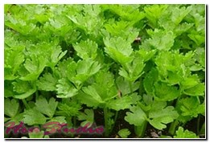Seledri (Apium graveolens ) adalah sayuran daun dan tumbuhan obat yang biasa digunakan sebagai bumbu masakan. Beberapa negara termasuk Jepang, Cina dan Korea mempergunakan bagian tangkai daun sebagai bahan makanan. Di Indonesia tumbuhan ini diperkenalkan oleh penjajah Belanda dan digunakan daunnya untuk menyedapkan sup atau sebagai lalap. Penggunaan seledri paling lengkap adalah di Eropa: daun, tangkai daun, buah, dan umbinya semua dimanfaatkan.
9. Kol
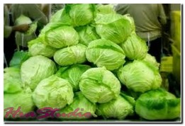Kubis, kol, kobis, atau kobis bulat adalah nama yang diberikan untuk tumbuhan sayuran daun yang populer. Tumbuhan dengan nama ilmiah Brassica oleracea L. Kelompok Capitata ini dimanfaatkan daunnya untuk dimakan. Daun ini tersusun sangat rapat membentuk bulatan atau bulatan pipih, yang disebut krop, kop atau kepala (capitata berarti "berkepala").
Kubis berasal dari Eropa Selatan dan Eropa Barat . Kubis dapat dimakan segar sebagai lalapan maupun diolah. Sebagai lalapan, kubis yang dilengkapi sambal biasa meyertai menu gorengan atau bakar seperti ayam atau lele. Kubis diolah untuk membuat orak-arik atau capcay. Daun kubis yang direbus menjadi lunak, tipis, dan transparan. Perebusan ini dapat dijumpi dalam berbagai sup dan sayur.
10. Jamur
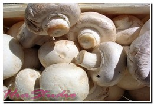Jamur merupakan salah satu bahan masakan yang nikmat. Beberapa jenis jamur bisa menjadi pengganti protein hewani karena rasanya yang mirip. Namun ada jamur pangan dan jamur yang tidak bisa dikonsumsi manusia.
Saat ini banyak jenis jamur dijual di pasar tradisional maupun supermarket. Jamur pangan ini mengandung sejenis sterol yang dipercaya mampu menghambat pertumbuhan sel kanker usus besar.
11. Wortel
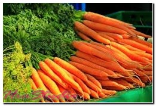Wortel/carrots (Daucus carota L.) berasal dari negeri yang beriklim sedang (sub-tropis) yaitu berasal dari Asia Timur Dekat dan Asia Tengah. Ditemukan tumbuh liar sekitar 6.500 tahun yang lalu.
Wortel adalah tumbuhan sayur yang ditanam sepanjang tahun. Terutama di daerah pegunungan yang memiliki suhu udara dingin dan lembab, kurang lebih pada ketinggian 1200 m di atas permukaan laut.
Tumbuhan wortel membutuhkan sinar matahari & dapat tumbuh pada semua musim. Wortel mempunyai batang daun basah yang berupa sekumpulan pelepah (tangkai daun) yang muncul dari pangkal buah bagian atas (umbi akar), mirip daun seledri.
Wortel adalah sayuran yang sudah sangat dikenal masyarakat Indonesia dan populer sebagai sumber vit. A karena memiliki kadar karotena (provitamin A). Selain itu, wortel juga mengandung vit. B, vit. C, sedikit vit. G, serta zat-zat lain yang bermanfaat bagi kesehatan manusia. Sosok tanamannya berupa rumput dan menyimpan cadangan makanannya di dalam umbi. Mempunyai batang pendek, berakar tunggang yang bentuk dan fungsinya berubah menjadi umbi bulat dan memanjang. Umbi berwarna kuning kemerah-merahan, berkulit tipis, dan jika dimakan mentah terasa renyah dan agak manis.
12. Timun
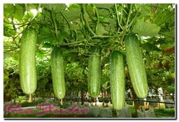Mentimun, timun, atau ketimun (Cucumis sativus ; suku labu-labuan atau Cucurbitaceae) merupakan tumbuhan yang menghasilkan buah yang dapat dimakan. Buahnya dipanen ketika belum masak benar untuk dijadikan sayuran atau penyegar, tergantung jenisnya.
Mentimun dapat ditemukan di berbagai hidangan dari seluruh dunia dan memiliki kandungan air yang cukup banyak di dalamnya sehingga berfungsi menyejukkan. Satu tumbuhan dapat menghasilkan 20 buah, namun dalam budidaya biasanya jumlah buah dibatasi untuk menghasilkan ukuran buah yang baik. Buah berwarna hijau ketika muda dengan larik-larik putih kekuningan. Semakin buah masak warna luar buah berubah menjadi hijau pucat sampai putih. Bentuk buah memanjang seperti torpedo. Daging buahnya perkembangan dari bagian mesokarp, berwarna kuning pucat sampai jingga terang.
13. Daun Pepaya
 Daun pepaya yang terkenal pahit biasanya banyak digunakan orang untuk campuran makanan seperti pecel, lalapan pendamping sambal ataupun makanan-makanan tradisional lainnya.
Daun pepaya yang terkenal pahit biasanya banyak digunakan orang untuk campuran makanan seperti pecel, lalapan pendamping sambal ataupun makanan-makanan tradisional lainnya.
14. Daun Singkong
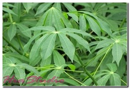Daun singkong adalah jenis sayuran yang banyak diminati. Manfaat daun singkong cukup besar bagi kesehatan tubuh. Biasanya para ibu dirumah mengolahnya menjadi sayuran berkuah, urapan, dan tumis.
Selain bisa dibuat dengan berbagai olahan, daun ini memiliki rasa yang enak. Daun singkong dalam hal kesehatan sebagai antioksidan yang mencegah proses penuaan, meningkatkan daya tahan tubuh terhadap serangan penyakit dan mencegah penyakit tulang, seperti rematik dan asam urat. Daun singkongjuga berkhasiat sebagai antikanker, mencegah konstipasi dan anemia, serta meningkatkan daya tahan tubuh.
15. Daun Bawang
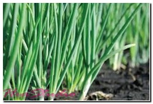Daun bawang merupakan jenis sayuran dari kelompok bawang yang banyak digunakan dalam masakan. Dalam seni masak Indonesia, daun bawang bisa ditemukan misalnya dalam martabak telur, sebagai bagian dari sop, atau sebagai bumbu tabur seperti pada soto.
Daun bawang sebenarnya istilah umum yang dapat terdiri dari spesies yang berbeda. Jenis yang paling umum dijumpai adalah bawang daun(Allium fistulosum). Jenis lainnya adalah A. ascalonicum, yang masih sejenis dengan bawang merah. Kadang-kadang bawang prei juga disebut sebagai daun bawang.
16. Kacang Panjang
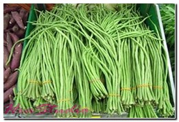Kacang panjang merupakan tumbuhan yang dijadikan sayur atau lalapan. Ia tumbuh dengan cara memanjat atau melilit. Bagian yang dijadikan sayur atau lalapan adalah buah yang masih muda dan serat-seratnya masih lunak, kacang panjang ini mudah didapati di kawasan panas di Asia. Kacang Panjang adalah sumber protein yang baik, vitamin A, thiamin, riboflavin, besi, fosfor, kalium, vitamin C, folat, magnesium, dan mangan.
17. Buncis
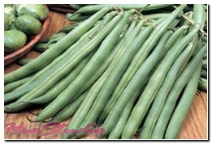Buncis (dari bahasa Belanda, boontjes, Phaseolus vulgaris ) merupakan sejenis polong-polongan yang dapat dimakan. Buah, biji, dan daunnya dimanfaatkan orang sebagai sayuran. Sayuran ini kaya dengan kandungan protein. Ia dipercaya berasal dari Amerika Tengah dan Amerika Selatan.
Buncis adalah sayur yang kaya dengan protein dan vitamin ini membantu menurunkan tekanan darah serta mengawal metabolisme gula dalam darah dan amat sesuai dimakan oleh mereka yang mengidap penyakit diabetes atau hipertensi. Kandungan serat dan enzim yang tinggi dapat membantu penurunan berat badan.
Kacang buncis tumbuh melilit, mempunyai akar tunggang dan sisi yang panjang dan memerlukan tiang untuk memanjat.
18. Lembayung
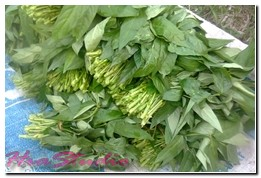Daun Kacang Panjang adalah bahan makanan yang biasa dikonsumsi oleh masyarakat Indonesia. Daun Kacang atau Lembayung sering digunakan untuk membuat pecel, urap atau sayur bobor.
19. Pare
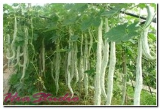Peria / pare adalah sejenis tumbuhan merambat dengan buah yang panjang dan runcing pada ujungnya serta permukaan bergerigi. Peria tumbuh baik di dataran rendah dan dapat ditemukan tumbuh liar di tanah terlantar, tegalan, dibudidayakan, atau ditanam di pekarangan dengan dirambatkan di pagar.
Tanaman ini tumbuh merambat atau memanjat dengan sulur berbentuk spiral, banyak bercabang, berbau tidak enak serta batangnya berusuk isma. Daun tunggal, bertangkai dan letaknya berseling, berbentuk bulat panjang, dengan panjang 3,5 - 8,5 cm, lebar 4 cm, berbagi menjari 5-7, pangkalnya berbentuk jantung, serta warnanya hijau tua. Buahnya bulat memanjang, dengan 8-10 rusuk memanjang, berbintil-bintil tidak beraturan, panjangnya 8-30 cm, rasanya pahit, warna buah hijau, bila masak menjadi oranye yang pecah dengan tiga daun buah.
20. Labu Siam
 Labu siam atau jipang (Sechium edule, bahasa Inggris: chayote) adalah tumbuhan suku labu-labuan (Cucurbitaceae) yang dapat dimakan buahdan pucuk mudanya. Tumbuhan ini merambat di tanah atau agak memanjat dan biasa dibudidayakan di pekarangan, biasanya di dekat kolam. Buah menggantung dari tangkai. Daunnya berbentuk mirip segitiga dan permukaannya berbulu.
Labu siam atau jipang (Sechium edule, bahasa Inggris: chayote) adalah tumbuhan suku labu-labuan (Cucurbitaceae) yang dapat dimakan buahdan pucuk mudanya. Tumbuhan ini merambat di tanah atau agak memanjat dan biasa dibudidayakan di pekarangan, biasanya di dekat kolam. Buah menggantung dari tangkai. Daunnya berbentuk mirip segitiga dan permukaannya berbulu.
Di Indonesia, labu siam merupakan sayuran sekunder namun hampir selalu dapat dijumpai di pasar. Buahnya biasa direbus sebentar untuk menghilangkan getahnya lalu dimakan bersama sambal terasi sebagai lalap atau menjadi campuran sayur bening dan sayur bobor. Buahnya dapat juga dirajang dan menjadi campuran untuk melunakkan siomay. Pucuk yang masih muda dapat direbus dan dibuat cah. Buahnya merupakan sayuran penting di masakan Meksiko. Di Australia, buahnya diiris, dibaluri tepung panir, lalu digoreng.
Orang Indonesia mengenalnya sebagai labu siam karena tumbuhan ini didatangkan dari Thailand (Siam waktu dulu) oleh orang Belanda. Orang Sunda menamakannya lèjèt dan orang Jawa mengenalnya sebagai jipang atau juga manisa.
21. Gambas
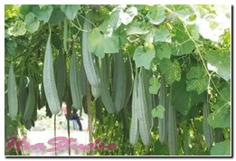Gambas, blustru, oyong, (Luffa Sp), adalah tanaman sayuran yang merambat dengan akar panjatnya. Gambas dibudidayakan untuk dipanen buah mudanya sebagai sayuran. Gambas biasa disayur bening, dengan jagung muda, daun katuk, taoge kedelai, dan bumbu bawang merah serta temu kunci. Namun gambas juga bisa dioseng-oseng (tumis) atau sayur bobor, lodeh serta bumbu lainnya. Gambas dipercaya mampu menstabilkan gula darah, menurunkan kadar kolesterol serta tekanan darah.
22. Kapri
 Kapri atau kacang kapri (Pisum sativum , suku polong-polongan atau Fabaceae) adalah sejenis tumbuhan sayur yang mudah dijumpai di pasar-pasar tradisional Indonesia. Kapri termasuk dalam golongan sayur buah, artinya buahnya yang dimakan sebagai sayur dan tidak digolongkan sebagai buah-buahan. Buah ini, yang bertipe polong (legume), dipanen ketika masih muda dan bijinya belum berkembang penuh, sehingga berbentuk pipih dan masih lunak.
Kapri atau kacang kapri (Pisum sativum , suku polong-polongan atau Fabaceae) adalah sejenis tumbuhan sayur yang mudah dijumpai di pasar-pasar tradisional Indonesia. Kapri termasuk dalam golongan sayur buah, artinya buahnya yang dimakan sebagai sayur dan tidak digolongkan sebagai buah-buahan. Buah ini, yang bertipe polong (legume), dipanen ketika masih muda dan bijinya belum berkembang penuh, sehingga berbentuk pipih dan masih lunak.
Jika terlalu tua dipanen polong kapri berserat tebal dan tidak nyaman lagi untuk dikonsumsi. Kapri masih satu jenis dengan ercis dan termasuk salah satu sayuran yang paling dini dikonsumsi manusia. Terdapat beberapa bukti budidaya di wilayah perbatasan Thailand dan Myanmar 12 ribu tahun yang lalu. Tumbuhan kapri, yang tumbuh baik didataran tinggi, tumbuh merambat sehingga memerlukan penopang dalam budidayanya. Di Indonesia ia biasanya ditopang dengan tongkat-tongkat tipis dari bambu.
23. Kentang
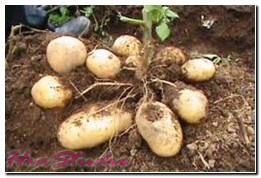Kentang (Solanum tuberosum L.) adalah tanaman dari suku Solanaceae yang memiliki umbi batang yang dapat dimakan dan disebut "kentang" pula. Asalnya dari Amerika Selatan dan telah dibudidayakan oleh penduduk di sana sejak ribuan tahun silam. Tanaman ini merupakan herba (tanaman pendek tidak berkayu) semusim dan menyukai iklim yang sejuk. Di daerah tropis cocok ditanam di dataran tinggi.
Kentang mengandung karbohidrat dan vitamin C. Hanya dengan makan 200 gram kentang, kebutuhan vitamin C sehari terpenuhi. Kentang merupakan lima kelompok besar makanan pokok dunia selain gandum, jagung, beras, dan terigu. Bagian utama kentang yang menjadi bahan makanan adalah umbi, yang merupakan sumber karbohidrat, mengandung vitamin dan mineral cukup tinggi.
24. Kecambah
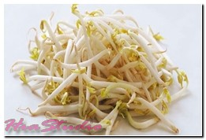Kecambah adalah tumbuhan (sporofit) muda yang baru saja berkembang dari tahap embrionik di dalam biji.
Taoge/toge adalah sayuran yang merupakan tumbuhan muda yang baru saja berkecambah dan dilindungi dari cahaya. Kata taoge/toge sendiri adalah serapan dari dialek Hokkian, istilah Mandarin-nya adalah douya (??) yang secara harfiah berarti kecambah kacang-kacangan, umumnya berasal dari kacang hijau dan sering disajikan dalam menu makanan dari Asia Timur. Taoge/toge segar sangat kaya akan vitamin E, dan merupakan menu yang sangat dianjurkan untuk dikonsumsi. Dengan mengonsumsi taoge/toge, tubuh akan terobati dan tercegah dari kekurangan vitamin E.
25. Petai
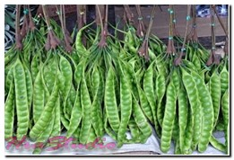Petai, pete atau mlanding (Parkia speciosa) merupakan pohon tahunan tropika dari suku polong-polongan (Fabaceae), anak-sukupetai-petaian (Mimosoidae). Bijinya, yang disebut "petai" juga, dikonsumsi ketika masih muda, baik segar maupun direbus. Pohon petai menahun, tinggi dapat mencapai 20m dan kurang bercabang. Daunnya majemuk, tersusun sejajar.
Bunga majemuk, tersusun dalam bongkol (khas Mimosoidae). Bunga muncul biasanya di dekat ujung ranting. Buahnya besar, memanjang, betipe buah polong. Dari satu bongkol dapat ditemukan sampai belasan buah. Dalam satu buah terdapat hingga 20 biji, yang berwarna hijau ketika muda dan terbalut oleh selaput agak tebal berwarna coklat terang. Buah petai akan mengering jika masak dan melepaskan biji-bijinya. Biji petai, yang berbau khas dan agak mirip dengan jengkol, dikonsumsi segar maupun dijadikan bahan campuran sejumlah menu.
26. Jengkol
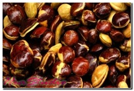Jering atau jengkol (Archidendron pauciflorum, sinonim: A. jiringa, Pithecellobium jiringa, dan P. lobatum) adalah tumbuhan khas di wilayah Asia Tenggara. Bijinya digemari di Malaysia, Thailand, dan Indonesia sebagai bahan pangan. Jengkol termasuk suku polong-polongan (Fabaceae.
Buahnya berupa polong dan bentuknya gepeng berbelit membentuk spiral, berwarna lembayung tua. Biji buah berkulit ari tipis dengan warna coklatmengilap. Jengkol dapat menimbulkan bau tidak sedap pada urin setelah diolah dan diproses oleh pencernaan, terutama bila dimakan segar sebagai lalap.
27. Bunga Turi
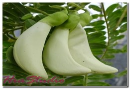Turi bisa dimanfaatkan untuk tanaman peneduh di kebuh maupun halaman rumah. Banyak orang memanfaatkan bunganya sebagai bahan baku lalapan yang enak dan bergizi. Bukan hanya itu, hampir seluruh bagian tanaman ini bermanfaat untuk meredam beragam keluhan.Bukan hanya sebagai campuran nasi pecel, turi, terutama bunganya, bisa digunakan untuk membuat urap, yakni sayur-mayur rebus dicampur kelapa parut yang dibumbui. Selain untuk dikonsumsi, bunga berwarna putih atau merah tua itu juga berkhasiat obat.
28. Rebung
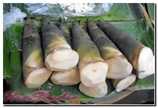Rebung merupakan tunas muda tanaman bambu yang muncul di permukaan dasar rumpun. Tunas muda bambu tersebut enak dimakan, sehingga digolongkan ke dalam sayuran. Rebung tumbuh dibagian pangkal rumpun bambu dan biasanya dipenuhi oleh glugut (rambut bambu) yang gatal.
Rebung berbentuk kerucut, setiap ujung glugut memiliki bagian seperti ujung daun bambu, tetapi warnanya coklat. Makanan yang bisa dibuat dari bahan dasar rebung antara lain acar, asinan, tepung, cuka, serta kerupuk. Pada pengobatan tradisional, rebung kuning diyakini dapat digunakan untuk mengobati penyakit sirosis hati. Rebung juga telah digunakan untuk mengobati penyakit batuk berdahak dan demam. Rebung dapat dimakan sebagai sayuran tunggal atau digunakan sebagai bahan pencampur sayuran dalam masakan lainnya.
29. Brokoli
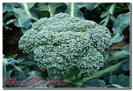Sayuran ini masuk ke Indonesia belum lama (sekitar 1970-an) dan kini cukup populer sebagai bahan pangan.
Bagian dari sayuran ini yang dimakan adalah kepala bunga, yang berwarna hijau. Teksturnya tersusun rapat seperti cabang pohon dengan batang tebal. Sebagian besar kepala bunga tersebut dikelilingi dedaunan.
Sayuran hijau ini merupakan sayuran tanpa lemak yang rendah sodium, kalori dan tinggi akan serat, vitamin C, potasium, B6 dan Vitamin A.
30. Asparagus
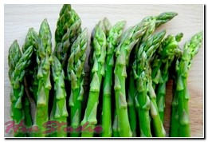Asparagus, dalam pengertian umum, adalah suatu jenis sayuran darisatu spesies tumbuhan genus Asparagus, terutama batang muda dari Asparagus officinalis. Asparagus telah digunakan sejak lama sebagai bahan makanan karena rasanya yang sedap dan sifat diuretiknya.
Dengan adanya sifat diuretik tersebut, asparagus berkhasiat untuk memperlancar saluran urin sehingga mampu memperbaiki kinerja ginjal. Asparagus merupakan sumber terbaik asam folat nabati, sangat rendah kalori, tidak mengandung lemak atau kolesterol, serta mengandung sangat sedikit natrium. Tumbuhan ini juga merupakan sumber rutin, suatu senyawa yang dapat memperkuat dinding kapiler.
31. Kacang Merah
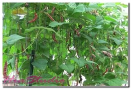Kacang merah adalah kacang yang berasal dari negara China dan Jepang. nama ilmiah: Vigna angularis. memiliki kandungan lemak dan natrium yang sangat rendah, nyaris bebas lemak jenuh, serta bebas kolesterol. Kacang merah sarat akan antioksidan, protein, folat, dan mineral. Mengandung pati tahan cerna yang telah terbukti manfaatnya untuk kesehatan. Manfaat tersebut diantaranya meningkatkan kemampuan tubuh untuk membakar lemak, membuat perut terasa kenyang lebih lama.
Dan manfaat protein yang terkandung dalam kacang merah tersebut yang bisa membantu untuk menurunkan resiko kanker terutama kanker usus besar. memiliki kandungan serat yang tinggi yang sangat baik bagi pencernaan. Kanker usus besar berpotensi terjadi di usus besar sebagai saluran terakhir pencernaan makanan.
32. Lobak
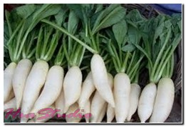Lobak adalah tumbuhan yang masuk ke dalam famili Cruciferae. Bentuk umbi lobak seperti wortel, tapi isi dan kulitnya berwarna putih. Tanaman lobak berasal dari negeri Cina, dan telah banyak diusahakan di Indonesia. Tanaman mudah ditanam baik di dataran rendah maupun tinggi (pegunungan).
Saat ini daerah yang banyak ditanami lobak adalah dataran tinggi Pangalengan, Pacet, Cipanas, dan Bedugul. Luas areal tanaman lobak di Indonesia saat ini berkisar 15.700 ha.
Tanah yang baik untuk tanaman lobak adalah tanah gembur, mengandung humus (subur) dan lapisan atasnya tidak mengandung kerikil (batu-batu kecil) dan derajat keasaman tanah 5-6, sementara waktu tanam adalah musim hujan atau awal musim kemarau. Namun kalau menanam pada musim kemarau, tanaman harus cukup air.